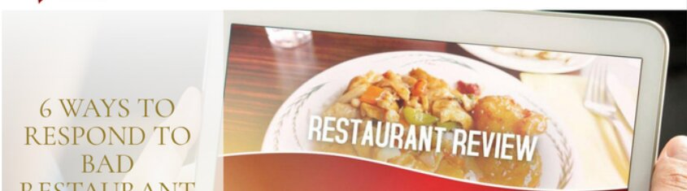
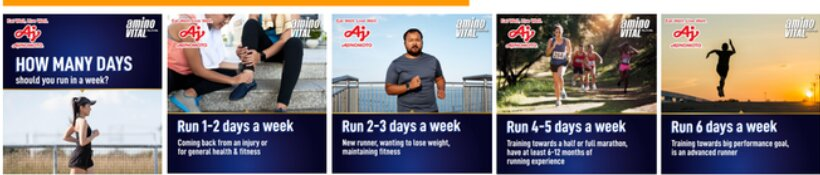
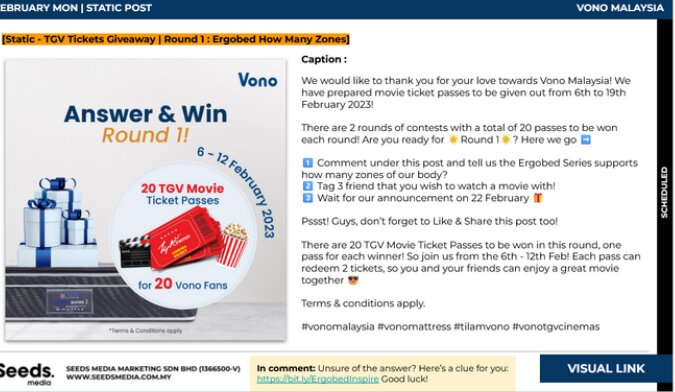

Kuala Lumpur, Malaysia — Open to Remote
I am a value creator; I dedicate my life towards building a co-existing community towards a brighter future, whether through words or through actions.
— Heriot-Watt Empowerment Program Life Motto
nathan.woork@gmail.com
4+ yrs
Cross-functional experience
3 disciplines
Ops · Marketing · Copy
EN · 中文
Fluent English, proficient Mandarin
01 / About
An autobiography of my job experience and education
I started by working on my own writing passions as a copy writer, having written blog posts, social media campaigns and branded video scripts for big names, such as Ajinomoto Malaysia, Vono, Truedan, Great Eastern Insurance as well as Freelance articles in diverse industries from B2B, F&B, SEO, Government Grants as well as in Entertainment.
After graduating with a Master's in International Business Management, I continued being in touch by working in operations, automating financial reports, reconciling data systems, report writing to executives as well as keeping them ahead of deadlines instead of chasing them from my experience as an Operations Analyst, an Account Strategist and as a Personal Assistant.
Both turned out to be the same skill, just pointed in different directions: Taking Mess, such as a spreadsheet, scattered updates or a blank page and turning them into something clear enough that someone else can use to affect their decision making.
02 / Experience
Feb — Jun 2026
NW Group Corporate Advisory · On-site
Kept a senior executive consultant ahead of every deadline, tracking concurrent project timelines, outstanding tasks, and stakeholder follow-ups across active workstreams.
Turned scattered updates into structured summaries the executive could scan for status and priorities in seconds, not meetings.
Built and maintained Google Workspace documentation — project records, research, meeting notes, presentation materials — keeping client-facing and internal work consistent.
Converted market and business research into concise, presentation-ready materials for senior management review, and managed calendars, meetings, and minutes to keep follow-through on track.
Aug — Nov 2025
Distinct Media · Remote
Automated recurring financial reporting with Google Sheets scripting and custom Python tools, replacing manual data handling with structured, repeatable workflows.
Built standardized weekly and monthly reporting formats that gave stakeholders one consistent view of financial and operational performance.
Audited existing reporting processes to flag manual bottlenecks, then streamlined them through scripting and structured data-processing methods.
Validated and reconciled operational and financial datasets across multiple source systems, catching inconsistencies before they could affect a report or a decision.
Jul — Aug 2025
Next Level Media
Owned day-to-day operations for assigned client accounts, tracking campaign activity, deliverables, and deadlines to keep every project moving.
Served as the central point of contact between clients, KOLs, and internal teams, keeping deliverables and expectations aligned across every party.
Tracked account status in real time, surfacing issues early enough for clients and internal teams to act on them.
Summarized campaign progress and next actions for stakeholders, keeping execution aligned from kickoff to delivery.
Oct 2024 — Apr 2025
BeStemReady
Developed and promoted social media content for robotics competitions, translating event details and milestones into clear audience-facing messages.
Created and presented sponsorship proposals on-site, contributing to partner engagement and company event-funding efforts.
Coordinated stakeholder follow-up and marketing deliverables, helping event communications stay aligned with delivery timelines.
May — Aug 2024
ITG Malaysia · On-site
Mined market research and Apollo-based lead-generation data to surface trends and unlock process improvements.
Delivered campaign performance reports tailored in depth and language to each stakeholder audience, from analysts to executives.
Maintained campaign databases and converted activity information into clear management reports, improving visibility into prospect and campaign progress.
Produced content and communication materials for exhibitions, events, and marketing initiatives supporting planned campaign activity.
Dec 2021 — Apr 2024
Seeds Marketing
Wrote social media captions, blogs, and articles for client campaigns, with work published by Ajinomoto Malaysia and Vono Malaysia.
Adapted content structure, tone, and messaging so each asset matched the client brief, target audience, and publishing format.
Ran recurring e-commerce operations across Shopify, Lazada, and Shopee, keeping product and platform information accurate and consistent across every channel.
Kept client storefronts running smoothly — handling routine platform maintenance, data entry, and administrative upkeep — and resolved customer-support issues as they came up.
May — Aug 2023
Midor Interior · On-site
Prepared tender documentation and data entry, keeping records accurate and audit-ready for commercial use.
Maintained company accounts, filing systems, and sales documentation, supporting fast, reliable retrieval across teams.
Delivered flexible day-to-day administrative support, from document delivery to ad hoc operational requests, and shadowed the sales team to assist with documentation.
Education
MA, International Business Management — Heriot-Watt University Malaysia · 2021 – 2025 · GPA 3.5 · Human Resources Officer, University Philanthropy Club
Oxburgh International School — IGCSE · 4 A*, 4 A, 1 B
03 / Selected Work
A working sample of the copy, campaigns, and reporting systems behind the résumé — for Ajinomoto, Vono Malaysia, Great Eastern, and more.

B2B content for Malaysian F&B business owners: menu planning, licensing, Ramadan promotions, and restaurant marketing.
"Your menu affects customer satisfaction, your bottom line, and how smoothly your kitchen operates."

Coordinated a 10-influencer campaign with individual tracked promo codes, alongside the monthly static/story/video content calendar.

Multi-month calendars spanning contests, Shopee sale pushes, and always-on mattress and sleep-care content.
Branded documentary-style video scripts for individual insurance agents, written for English, Mandarin, and Malay voiceover.
"I used to doubt myself too — because the public's view of this career wasn't kind."
B2B prospectus for an AI-education conference: exhibitor packages, partner tax incentives, and sponsor outreach.
Replaced manual financial reporting with Python and Google Sheets scripting, standardizing weekly and monthly formats across stakeholders.
04 / Skills & Tools
Operations & Reporting
Process automation · Financial & KPI reporting · Data validation & reconciliation · Workflow documentation · Google Sheets (Apps Script) · Python · Excel
Marketing & Coordination
Campaign coordination · B2B lead generation · Client & KOL coordination · Sponsorship proposals · Event marketing · Meta Ads · TikTok for Business
Copywriting & Content
Blog & article writing · Video scriptwriting · Social & digital marketing copy · Brand-adaptive tone & messaging · Campaign performance reporting
Tools & Languages
Apollo.io · Mailchimp · SurveyMonkey · WhatsApp Business · Adobe Premiere Pro · CapCut · Canva
English (Fluent) · Mandarin (Proficient)
05 / My Background
Most of my travel starts with a road trip — a solo drive along Penang's coast, or flights out to Hong Kong, Hanoi, Japan, and Guangzhou when the itch to see something new gets strong enough. At home, I run my own modded Minecraft server on a Google Cloud VM — mods, resource packs, and troubleshooting, all self-taught, purely because I like building systems even when nobody's paying me to. And most of what I read lately sits in social science — Adam Grant and Malcolm Gladwell are the two authors I keep coming back to, probably because I like the same thing about people that I like about spreadsheets: there's usually a clearer pattern underneath the mess.
Outside of that, I boulder and golf and try to make it to the gym often, play guitar most evenings, and once earned a barista license from eciatto — mostly because I wanted to know what I was doing before making my own coffee at home. I've also somehow ended up looking after two sugar gliders, a sun conure, a kitten, and three dogs, which some weeks feels less like a hobby and more like a second job.
06 / Contact
Amaze Amaze Amaze